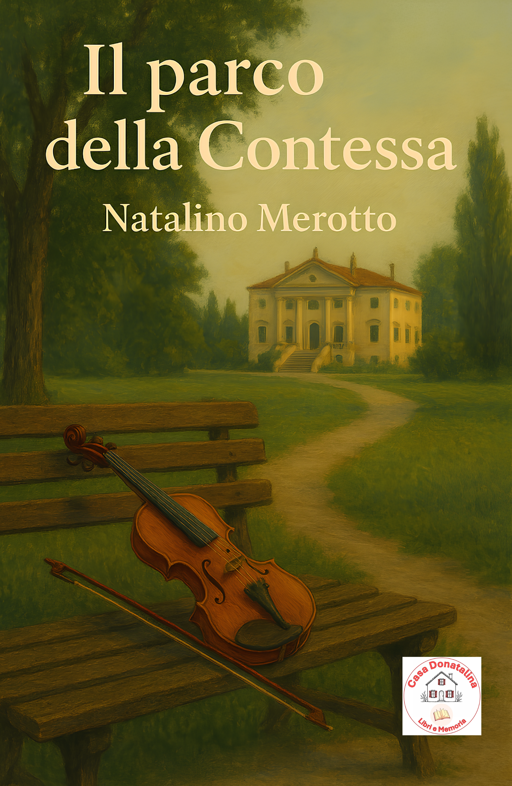
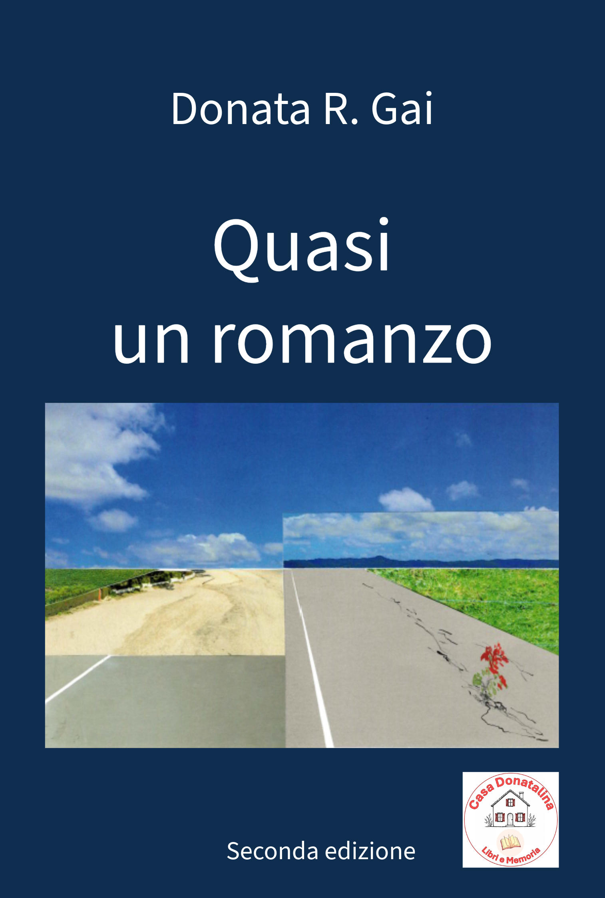
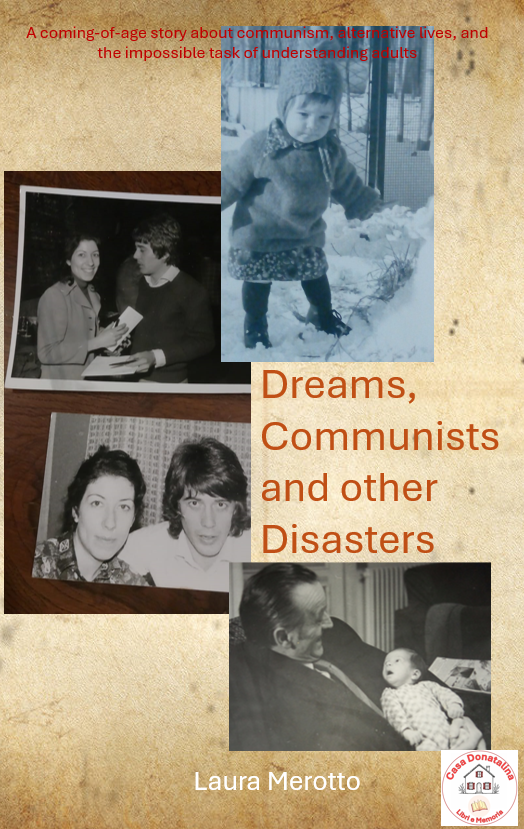

Unsere Bücher
Die von Casa Donatalina veröffentlichten Bücher entstehen aus Familiengeschichten, persönlichen Erinnerungen und dem Wunsch, Erzählungen zu bewahren, die es verdienen, weitergegeben zu werden.

Il Parco della Contessa
Di Natalino Merotto
Una storia di famiglia, memoria e luoghi che custodiscono il passato.
Sullo sfondo di un’Italia che cambia, tra le speranze e le disillusioni degli anni Settanta,
si dipana la storia di un uomo in cerca di un posto nel mondo.
Dopo aver scoperto il tradimento della moglie, Giovanni Simoni — giovane insegnante idealista e appassionato
— lascia la sua casa e cerca una nuova direzione. Inaspettatamente,
la trova tra le mura silenziose e nel parco rigoglioso di villa Von Hoffel, dimora decadente di
una contessa tedesca legata a un doloroso passato.
Nel cuore di un paesino della provincia veneta, Giovanni intreccia rapporti profondi con una piccola comunità
di personaggi emblematici: un segre-tario militante, una coppia di anziani — lui giardiniere, lei
cuoca — custodi di una gentilezza antica, e i dipendenti di una fabbrica tessile con i loro sogni taciuti.
Amicizie, amori, lutti e rivelazioni attraversano la sua vita, come il vento tra gli alberi del parco.
Il parco della Contessa è un romanzo intimo e corale, dove le vite semplici si fanno epiche,
e le scelte personali si intrecciano con la Storia. Uno sguardo narrativo capace di cogliere
l'umanità anche nei gesti più semplici traccia una storia delicata, in cui ogni personaggio porta
con sé un frammento di verità, e dove anche il dolore sa aprire la strada a un gesto d’amore.

Quasi un romanzo
Di Donata R. Gai
Una vita raccontata attraverso ricordi, incontri e trasformazioni.
1972, provincia veneta. Daniela Giordani, detta Dani, è una giovane medico al suo primo
incarico in un ospe-dale di paese. È brillante, preparata, determinata. Ma è anche fragile, inesperta,
e ancora inconsapevole della forza che possiede. A ogni passo si scontra con un ambiente dominato da
maschilismo, favoritismi e pressioni politi-che: un sistema che vorrebbe zittirla, relegarla in un ruolo
secondario, lasciarla ai margini. Dani però non arretra.
Nel caos del pronto soccorso scopre cosa significa davvero curare: ascoltare, comprendere, portare umanità
dove altri vedono solo numeri. Tra colleghi solidali, compagni di militanza e pazienti, cresce la sua voce
di donna e di medico. E mentre intorno a lei tutto è lotta, fuori e dentro l’ospedale, trova in Nicola
– razionale, stabile, un por-to sicuro – la forza che le manca nei momenti di dubbio.
Quasi un romanzo
intreccia politica, quotidiano, amore e idealismo in un racconto vivo e necessario. È la storia di chi
continua a fare il bene anche quando nessuno lo vede, di chi affronta l’ingiustizia senza perdere la dignità,
e di un’Italia che cambia troppo lentamente. Un romanzo che lascia ammirazione, ma anche rabbia: perché
le battaglie di Dani non appartengono solo al passato.

Sogni, comunisti e altri disastri
Di Laura Merotto
Una storia personale tra ideali, famiglia e cambiamenti di un'epoca.
Crescere negli anni Ottanta non è semplice. Ancora meno se hai due genitori comunisti,
un nonno deciso a salvarti dai comunisti, compagni di scuola con teorie improbabili sulla
politica e sui fatti di cronaca, una curiosità incontenibile, e il sogno di diventare un
ufficiale della Stasi.
Attraverso episodi raccontati con ironia, la protagonista osserva il mondo
con la logica rigorosa, spietata e irriverente dell’infanzia. Gli adulti parlano di politica,
religione, morte, guerra e amore; i bambini cercano di capirli. Il risultato è un susseguirsi di
malintesi, intuizioni folgoranti e domande capaci di incrinare anche le convinzioni più granitiche.
Crescendo, l’immaginazione cambia forma, ma lo sguardo e l’ironia rimangono gli stessi. Realtà e sogno si intrecciano,
e le vite possibili diventano un altro modo per rimettere in gioco le scelte fatte... e quelle lasciate
indietro. Perché crescere significa imparare molte cose: che non basta una maestra per risolvere le guerre,
che non basta menare i fascisti per risolvere i problemi del mondo, e che gli adulti continuano a essere
una categoria piuttosto difficile da capire. In fondo, quando cerchiamo di capire il mondo, finiamo quasi sempre per inventarcelo.

Dreams, Communists and Other Disasters
by Laura Merotto, English edition
The English translation of Sogni, comunisti e altri disastri.
What happens when a little girl growing up in Italy during the 1980s dreams of becoming a Stasi officer? Growing up is never simple. It is even less so when you have two communist parents, a grandfather determined to save you from communism, classmates with bizarre theories about politics and current events, and an insatiable curiosity about the world.
Through a series of sharply funny episodes, the young narrator observes life with the ruthless logic, irreverence, and honesty that only childhood can possess. While adults argue about politics, religion, death, war, and love, children simply try to make sense of it all. The result is a succession of misunderstandings, brilliant insights, and unexpected questions capable of shaking even the strongest certainties. As she grows up, imagination takes on new forms, but her wit and unique way of looking at the world remain unchanged. Reality and dreams begin to intertwine, and alternative lives become a way of revisiting the choices she made—and those she left behind. Because growing up means learning many things: that one schoolteacher cannot stop wars, that punching fascists will not fix the world, and that adults remain, perhaps, the most puzzling creatures of all. After all, whenever we try to understand the world, we almost always end up reinventing it.